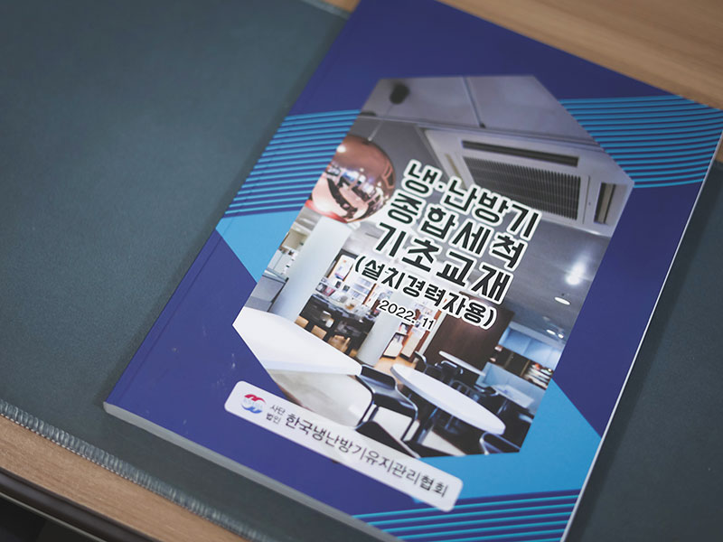
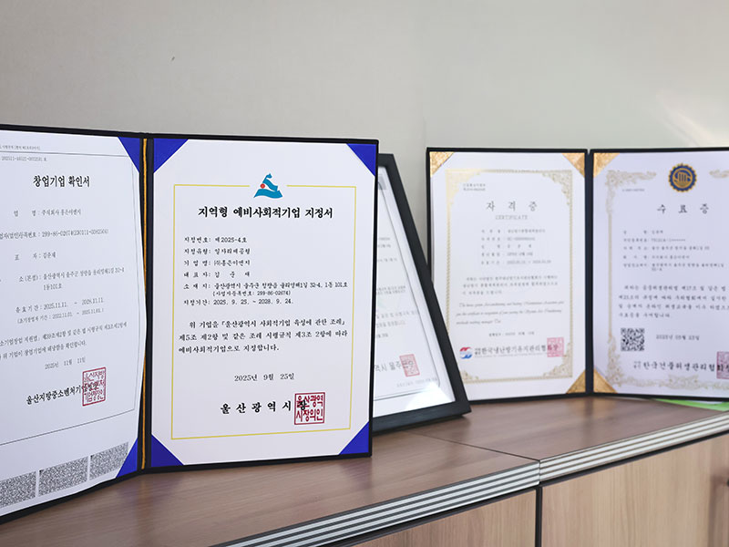
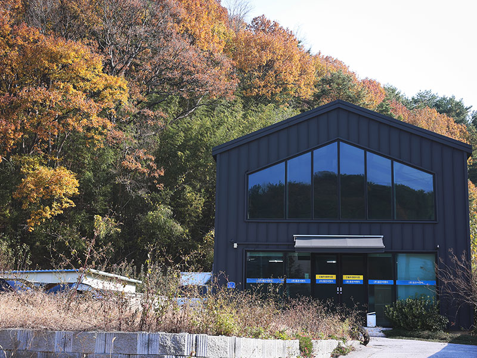
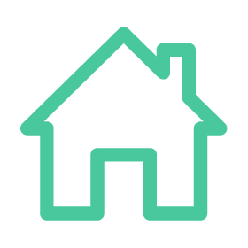
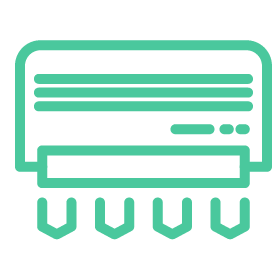
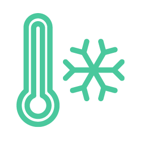
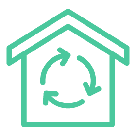
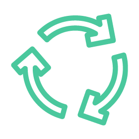
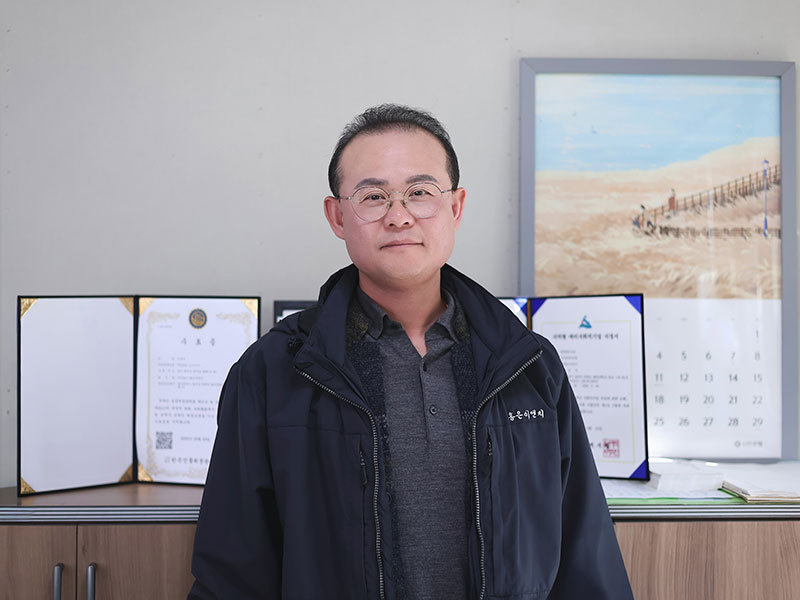

겨울이면 난방기가, 여름이면 냉방기가 꼭 필요한 한국. 하지만 ‘틀어 쓰는 것’만큼 중요한 건, 그 기계들이 안전하게 오래도록 제 역할을 하도록 챙겨주는 기술이다. 홍은이엔지는 울산의 다양한 사업장과 가정에 안정적인 냉난방 환경을 제공하는 종합 서비스 기업이다. 무엇보다 설치가 끝난 뒤에도 그들의 손길은 냉난방기에 닿는다. 고장은 없었는지, 청소가 필요한 곳은 없는지 살피고 진단하며 냉난방기의 ‘수명’을 함께 지켜간다.
홍은이엔지는 어떤 기업인가요?
홍은이엔지는 울산 지역의 교육기관, 공공기관, 의료시설, 공장, 그리고 일반 가정까지. 다양한 공간에 냉난방기를 설치하고, 안정적으로 사용할 수 있도록 점검과 유지보수를 제공하는 기업입니다. 단순 설치에서 끝나는 것이 아니라, 환경 분석부터 사후관리까지 전 과정을 책임지는 ‘종합 냉난방 서비스’를 지향하고 있습니다.
현장 업무가 많은 만큼, 가장 중요하게 생각하는 차별점은 무엇인가요?
냉난방기는 겉으로 보기에는 “그냥 연결하면 되겠지”라고 생각할 수 있겠지만, 실제로는 배관·전기·냉매가 복합적으로 얽혀 있습니다. 특히 냉매는 인체에 위험할 수 있는 물질이어서 실수나 잘못된 설치가 큰 사고로 이어질 수 있습니다. 그래서 저희는 현장에 나가면 먼저 환경을 꼼꼼하게 파악하고, 수요처와 충분히 논의한 뒤 설계 도면을 만들어 그에 따라 시공·납품을 진행합니다.
홍은이엔지의 가장 큰 차별점은 ‘정직한 점검’과 ‘투명한 설명’입니다. 고객이 이해하기 어려운 전문 용어로 설명을 끝내기보다, 현재 상태와 필요한 조치가 무엇인지 쉽게 풀어 말씀드리는 방식을 중요하게 생각합니다. 설치 후에도 즉시 대응 가능한 지역 밀착 A/S 체계를 운영하며, 장기적으로 신뢰할 수 있는 파트너가 되기 위해 꾸준히 노력하고 있습니다.



취약계층을 대상으로 하는 ‘냉난방기 지원 사업’은 어떻게 시작하게 됐나요?
현장에서 마주한 현실적인 어려움이 이 사업의 출발점이었습니다. 설치나 점검을 다니다 보면 경제적 여건이나 주거 환경 때문에 냉난방기가 고장 나도 그대로 방치하거나, 오래된 장비를 위험하게 사용하는 가정이 정말 많아요. 특히 여름과 겨울처럼 온열·한랭 질환 위험이 큰 시기에도 제대로 된 냉난방 없이 버티고 계신 분들이 많다는 사실을 알게 됐습니다. 이제 기본적인 냉난방은 ‘복지의 한 부분’이라고 생각합니다. 그렇다면 ‘지역 기반 기술 기업으로서 우리가 어떤 역할을 할 수 있을까’라는 고민에서 출발해 자연스럽게 냉난방기 지원 사업을 시작하게 됐습니다.
지원대상

- • 경제적 여건 부족
- • 시설 노후로 설치가 제한된 경우

- • 안전 위험이 높음
- • 에너지 낭비 및 고지서 부담 증가

- • 고령자
- • 장애인
- • 건강 취약자·독거 가구
현장에서 기억에 남는 사례도 있으실 것 같아요.
발달장애 아동이 있는 가정이 있었는데, 그 아이가 특히 더위와 추위에 민감한 편이었어요. 오래된 냉난방기가 계속 고장을 일으키다 보니 일상생활이 많이 힘들다는 이야기를 들었습니다. 그 말씀을 듣고 장비를 교체하고 정비해 드렸더니, 이후 아이 상태가 눈에 띄게 좋아졌다고 하시더라고요. 짜증도 줄고 잠도 잘 잔다고 하셔서, 저희도 정말 큰 보람을 느꼈습니다.
사회적기업으로서 홍은이엔지가 추구하는 목표


지역 기반 기업으로서 지역사회와는 어떤 방식으로 함께하고 계시나요?
홍은이엔지는 지역 내 취약계층 채용을 통해 함께 성장하는 구조를 만들고 있습니다. 현재 사무·현장 업무에 60대 이상 직원 두 분이 상용직으로 근무하고 계시고, 처음에는 어려움도 있었지만 지금은 현장의 든든한 베테랑으로 활약하고 계십니다.
고난도 설치 작업은 저희가 맡고, 어르신들께는 비교적 안전한 세척·분해·건조 업무를 맡아주시는 방식으로 역할을 나누고 있어요. 역할이 작아 보이지만 현장에서는 무척 큰 힘이 되어 주고 계세요. 앞으로도 지역 거주자를 우선적으로 채용해 지역과 함께 성장하는 방식으로 확장해 나가고자 합니다.

마지막으로, 앞으로 이루고 싶은 목표가 있다면요?
지금 하고 있는 일을 꾸준하게, 흔들림 없이 이어가는 것이 가장 큰 목표입니다. 조금씩 천천히 성장하되, 지역에서 ‘홍은이엔지’ 하면 냉난방은 믿고 맡길 수 있는 회사라는 인식이 자리 잡았으면 합니다. 홍은이엔지의 일을 잘 알아주는 사람들이 더 많아졌으면 좋겠고, 지역에 꼭 필요한 기업으로 오래 남는 게 가장 큰 바람입니다.